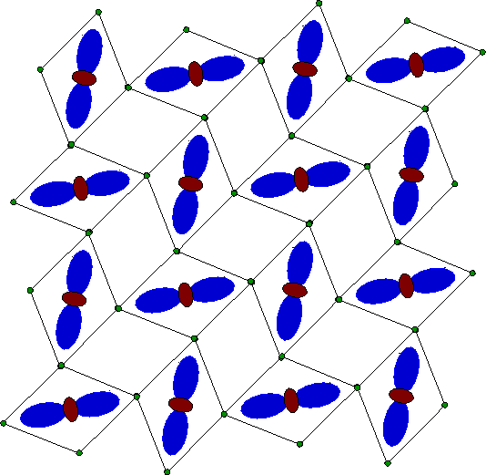
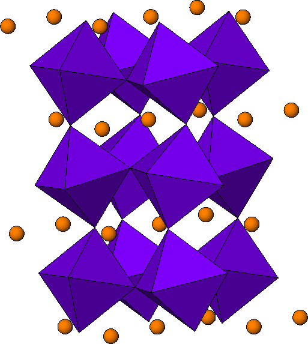
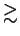

The perovskite manganites related to LaMnO3 continue to yield
puzzling and surprising results despite intensive study since the
1950's [110,111,99]. The pervading
interest comes from the delicate balance between electronic, spin and
lattice degrees of freedom coupled with strong electron correlations.
Remarkably, controversy still exists about the nature of the undoped
endmember material, LaMnO3, where every manganese ion has a nominal
charge of 3+ and no hole doping exists. The ground-state is well
understood as an A-type antiferromagnet with long-range ordered,
Jahn-Teller (JT) distorted, MnO6
octahedra [79,126] that have four shorter and two
longer bonds [127]. The elongated occupied eg
orbitals lie pointing down in the xy-plane and alternate between
along x and y directions, the so-called O structural
phase [79,126]. Fig. 3.7 shows
the orbital ordering (OO) of the occupied eg orbitals in the ab
plane. Here the MnO6 octahedra are tilted, giving the crystal
structure as shown in Fig. 3.8.
structural
phase [79,126]. Fig. 3.7 shows
the orbital ordering (OO) of the occupied eg orbitals in the ab
plane. Here the MnO6 octahedra are tilted, giving the crystal
structure as shown in Fig. 3.8.
|
 |
|
 |
At
TJT  750 K the sample has a first-order structural phase
transition to the O phase that formally retains the same symmetry
but is pseudo-cubic with almost regular MnO6 octahedra (six
almost equal bond-lengths). In this phase the cooperative JT
distortion has essentially disappeared. It is the nature of this O
phase that is unclear. The O-phase has special importance since it
is the phase from which ferromagnetism and colossal magnetoresistance
appears at low temperature at Ca, Sr dopings > 0.2 [79].
750 K the sample has a first-order structural phase
transition to the O phase that formally retains the same symmetry
but is pseudo-cubic with almost regular MnO6 octahedra (six
almost equal bond-lengths). In this phase the cooperative JT
distortion has essentially disappeared. It is the nature of this O
phase that is unclear. The O-phase has special importance since it
is the phase from which ferromagnetism and colossal magnetoresistance
appears at low temperature at Ca, Sr dopings > 0.2 [79].
The additional complication of disorder due to the presence of
alkali-earth dopant ions, and the doped-holes on manganese sites, is
absent in LaMnO3. However, there is still disagreement about the
precise nature of the O-phase in this simple case. In 1996
Millis [128], based on fits to data of a classical model
that included JT and lattice terms, estimated the energy of the JT
splitting to be
 - O
transition is an order-disorder transition where local JT octahedra
survive but lose their long-range spatial correlations. The barrier
that is overcome at this transition is the lattice stiffness that
serves to orientationally order the distorted octahedra. This picture
is supported by some probes sensitive to local structure, for example
XAFS [129,130] and Raman
scattering [131], each of which present evidence that
structural distortions consistent with local JT effects survive above
TJT. However while compelling, this picture seems hard to
reconcile with the electronic and magnetic properties. In the
O-phase the material's conductivity increases (despite being at
higher temperature and more disordered), and becomes rather
temperature independent [132], and the ferromagnetic
correlations become stronger compared to the
O
- O
transition is an order-disorder transition where local JT octahedra
survive but lose their long-range spatial correlations. The barrier
that is overcome at this transition is the lattice stiffness that
serves to orientationally order the distorted octahedra. This picture
is supported by some probes sensitive to local structure, for example
XAFS [129,130] and Raman
scattering [131], each of which present evidence that
structural distortions consistent with local JT effects survive above
TJT. However while compelling, this picture seems hard to
reconcile with the electronic and magnetic properties. In the
O-phase the material's conductivity increases (despite being at
higher temperature and more disordered), and becomes rather
temperature independent [132], and the ferromagnetic
correlations become stronger compared to the
O -phase [132,133]. These results clearly
imply greater electronic mobility in the O-phase, which appears at
odds with the persistence of JT distortions above TJT that are
becoming orientationally disordered. The disordering should result in
more carrier scattering and higher resistivity, contrary to the
observation [132]. Furthermore, a sharp decrease in the
unit cell volume at TJT has been reported [134],
which mimics the behavior observed when electrons delocalize and
become mobile at Tc in the doped materials [135]. The
authors of Ref. [134] reconcile this observation with the
order-disorder picture of the phase transition by analogy with the
volume drop on melting of ice, though the connection seems somewhat
tenuous.
-phase [132,133]. These results clearly
imply greater electronic mobility in the O-phase, which appears at
odds with the persistence of JT distortions above TJT that are
becoming orientationally disordered. The disordering should result in
more carrier scattering and higher resistivity, contrary to the
observation [132]. Furthermore, a sharp decrease in the
unit cell volume at TJT has been reported [134],
which mimics the behavior observed when electrons delocalize and
become mobile at Tc in the doped materials [135]. The
authors of Ref. [134] reconcile this observation with the
order-disorder picture of the phase transition by analogy with the
volume drop on melting of ice, though the connection seems somewhat
tenuous.